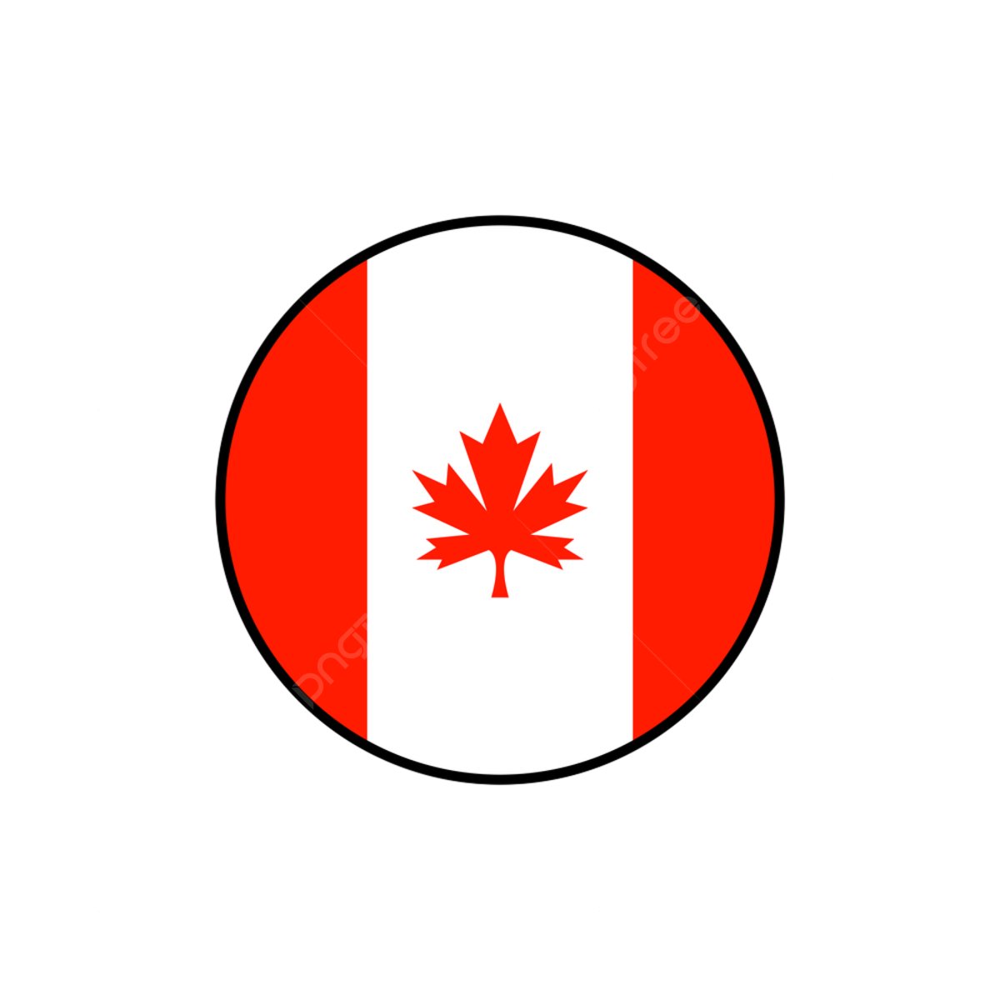
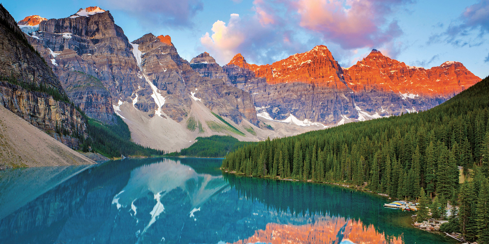
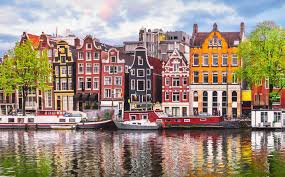
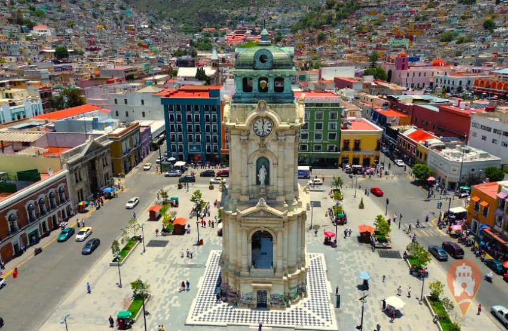

Homepage
My favorite spots
 Madrid
Madrid

The spain government and royal family live here. It is a modern metropolitan city and an economical
and industrial center of Spain. It is sorrounded by mountains and natural parks. Since it has been the
hub between different cities, it is connected to all major Spain cities. It known by attractions
such as museums, amusement parks, the skiing is its sport, and an intersting nightlife during the week.
- Province/State:Madrid
- Country: Madrid
- Population(2025): 3.527.924 people
- Latitude: 40°30′N 3°40′O
- Longitude: 3°42′O
 Canada

It is the world's second largest country by area,cknown for its stunning natural beauty,
multicultural society, and parliamentary democracy. It is a constitutional monarchy with
English and French as its official languages and a prosperous economy.
- Province/State: Canada
- Country: Canada
- Propulation(2024): 41,29 million people
- Latitude: 52° - 141° O
- Longitude: 42° - 83°N
 Paris
Paris

The capital of France, known for its significant cultural, financial, and commercial influence.
It is known as the "city of light" because it is considered as the global center of art, fashion and gastronomy.
It features iconic architecture and a well-developed pulic transport system.
- Province/State: France
- Country: France
- Propulation: 2.1 million people
- Latitude: 48°51′24″N
- Longitude: 2°21′08″E
 Amsterdam
Amsterdam

It is the largest city of The Netherlands, known for its historical canals, picturesque architecture, world-class art
museums, and its liberal and tolerant culture. It is characterized by its nmerous bicycles and houseboats, its network of
canals and buildings that sit below sea level.
- Province/State: Amsterdam
- Country:The Netherlands
- Propulation(2024):933,680 people
- Latitude: 52°22′00″N
- Longitude: 4°53′00″E
 Pachuca
Pachuca

I was borned in this city so that's why I love it so much. It is known as "La Bella Airosa"
due to its high elevation and windy conditions. It has characteristic elements such as the Clock Tower
and its soccer club. it's an important business and cultural center, famous for its unique architecture,
rich past, delicious pastes, and football tradition.
- Province/State:Hidalgo
- Country:México
- Propulation: 693,000 people
- Latitude:20° 01' y 20° 12'
- Longitude:98° 41' y 98° 52'